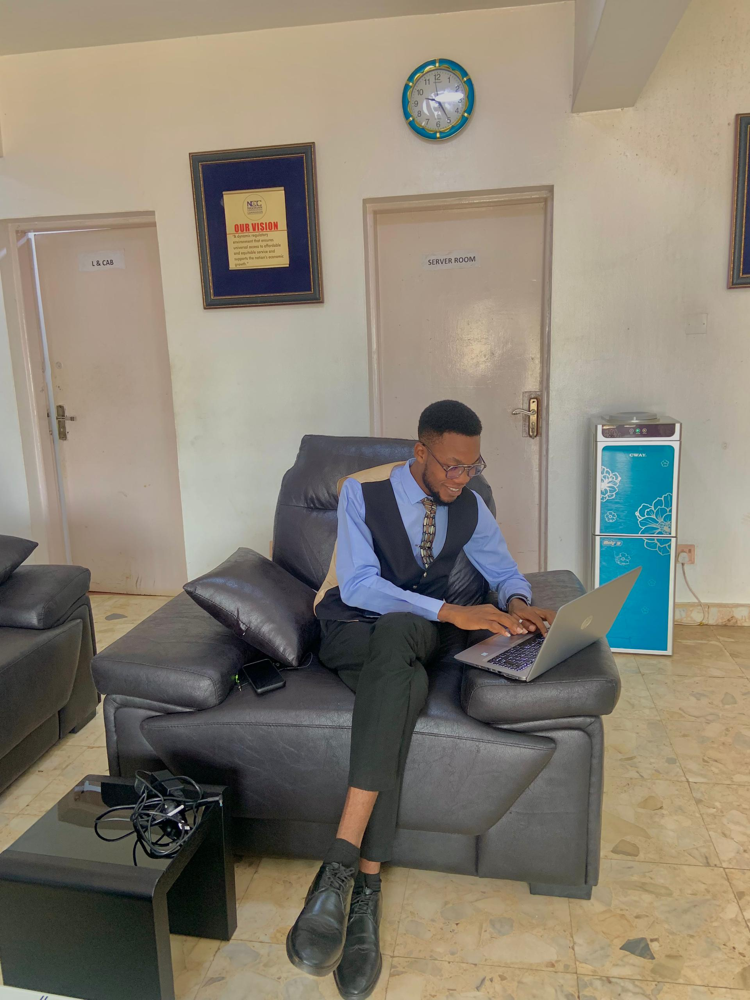

Progress
Afenforo
"Data to me isn't just numbers; they are untold stories waiting to be discovered by Analysts.

Hello! I'm Progress Afeniforo, a passionate data analyst and public speaker with a strong foundation in Mathematics. I earned my degree from the prestigious University of Ibadan in Ibadan, Nigeria.
A significant facet of my professional identity lies in my proficiency with tools such as Microsoft Excel, SQL, Power BI, and SPSS. While I currently analyze data with these tools, I'm also venturing into the world of Python for more sophisticated and scalable analyses. My journey into the realm of data began with a Mathematics degree from the University of Ibadan. This academic foundation serves as the bedrock for my analytical prowess. Alongside my formal education, I discovered the symphony of data and music – I love playing the piano, I find the same discipline and precision required in musical artistry reflected in my analytical work. Currently, I work as an intern at the Nigerian Communications Commission (NCC). This role offers me a hands-on experience, allowing me to dive deep into data, uncover patterns, and derive actionable insights especially in the communications sector.
In addition to my analytical skills, I am a fervent advocate for knowledge sharing. As the convener of EXCELwithAP, a free Microsoft Excel online training program, I've had the pleasure of guiding over 1,100 enthusiastic participants through the intricacies of Excel. This initiative is not just about spreadsheets; it's about empowering individuals to harness the full potential of data.